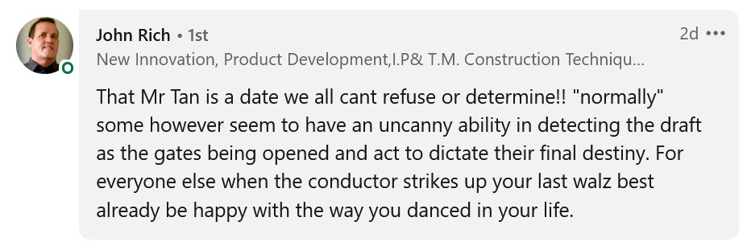
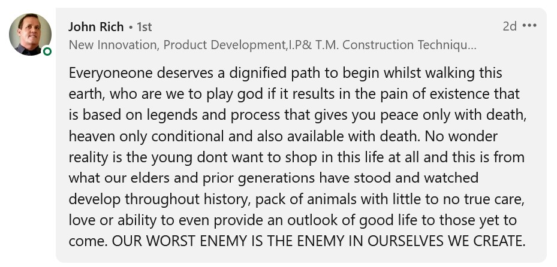
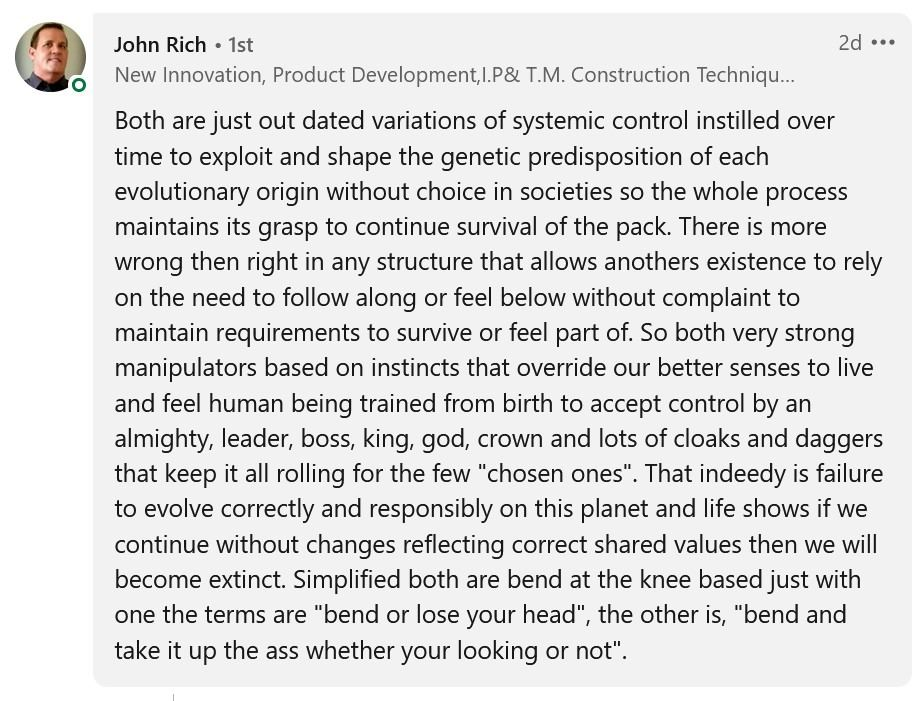
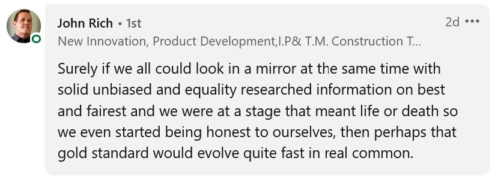
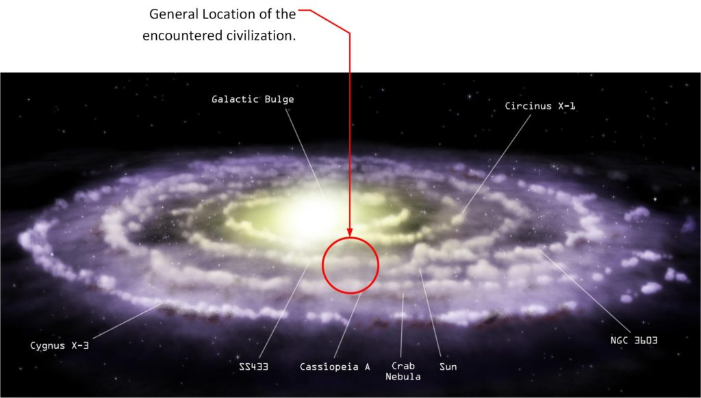
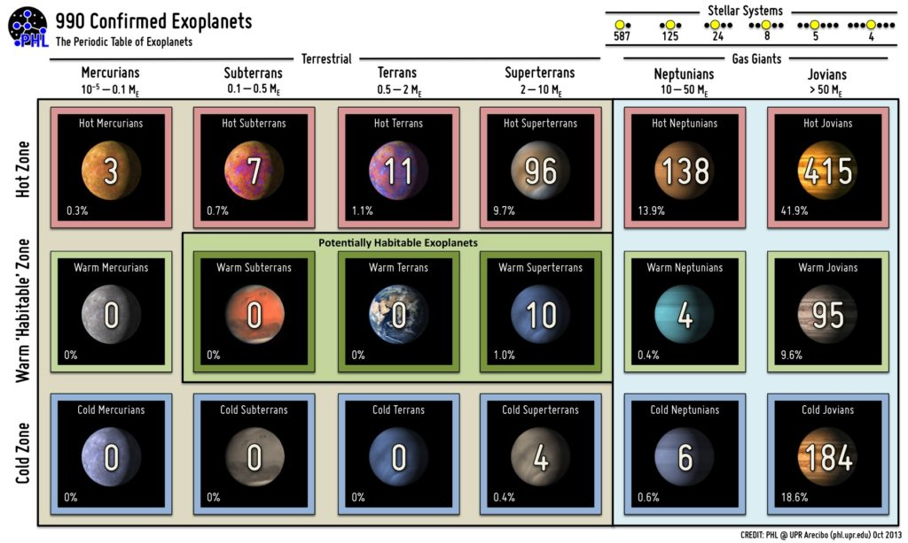
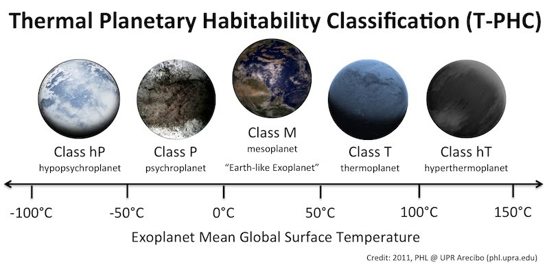

There is a ton-load of disinformation, opinion, mixed messages and all sorts of distractions and bullshit on the internet. Nothing is more rife than that associated with the “Type-1 greys”.
Indeed, there are MM followers, well meaning no doubt, and inadvertently pick up on these other “signals” (whether through reading something, or in a vision or other non-physical method) and repeat it here. I am not saying they are bad, or wrong. But I really want clarity.
I try to provide what I know in simple, clear language, and in a non-confrontation (for the most part) manner. I want this place to be a “safe place”; a “safe space”. I want people who arrive at MM doorstep to be welcomed and accepted, no matter what they believe, no matter what social environment they come from, and no matter what their experiences are. I want this place to be a sanctuary where you are accepted without hesitation.
Never the less, sometimes our experiences, our backgrounds, our understandings contain baggage that seeps into our daily lives, and we bring it here to MM. Like automatically assuming that Mantids are the angels spoken about in the Bible. Maybe they are. Maybe they aren’t. Maybe they are something else. But does it REALLY matter?
No.
What matters is how YOU view them. And you can communicate your views using the tools at hand. Which might be the Bible… and well understood by Christians, but confusing to Daoists.
Communication is the key. The ability to communicate openly and freely.
And when we are receiving the messages from others we can get a little confused. Try teaching vibrational mechanics to a classroom of college students hung over from last nights drinking to get an idea of what I am talking about. Which is pretty much WHY I try to simplify, simplify, and dumb down everything.
MerLynn has some great information, but he gets so enraptured in the content, that you must really latch onto it or you will get thrown off. It’s like a bucking bronco and you must hold on for dear life. Which is why I have asked him to simplify it, and not be so information dense.
Here’s an example of how understandable it can be once you simplify things…
This entire Universe is made of Light Structures. Everything is the Light said Tesla. Thales and Aristotle agreed that Everything is Water and Life is in Everything. What this means is.... Light, from ALL sources, candle, spark, sun, bulb is a STRUCTURE that is Magnetic. Like a tiny "lego" piece that has a North and South Pole and an 'equatorial' polarity region. These Structures of Light come together to form Tetrahedrons and then these Tetrahedrons form ALL OF CREATION. There are no electrons or protons or neutrons Dracul. So if you want to discuss ALIEN TECHNOLOGY which is TESLA and Leedskalnin TECHNOLOGY, please do so using their terms of Reference and 'electrons' are just not part of any real science. Think in terms of Energy, Frequency and Vibrations with WAVE FORMS.
Brilliant. Really.
It doesn’t mean that he is wrong, or bad, or misunderstanding things from my point of view. It just means that I want his information to be spread out as understood by a much wider scope of MM readership, than just the hard-core. I want more people to read it. More people to understand it. More people to embrace it.
It’s a good thing right?
Information, and the communication of it, is important. We all come from different places, with different backgrounds, different histories, different needs, wants and desires. But we all want to share.
One common way on the internet is to use “themes” and “memes”.
We all know what a meme is. It’s a common phrase or understanding that is well packaged in a mannerism, or scene (from a movie or television show).
Likewise are “themes”.
There are ton-load of “Themes” in the American internet. Donald Trump was the master of creating themes…
- Jail Hillary.
- Contain China.
- Build a Wall.
- Make America great again.
But these “themes” come in all sorts of other venues as well. Even themes that you don’t realize are themes.
- Katana swords are great for killing zombies.
- Do not by a used car from a dealer wearing a polyester plaid business suit.
- Having a tattoo shows your “uniqueness”.
- ‘Merica!
And in the conventional scene we have…
- Madcow illness will turn your into a moron if you eat that hamburger.
- Y2K means that you had best be prepared for the apocalypse.
- 3G radiation will fry your brain.
- Cell phones will explode near gasoline pumps.
And when you start talking about extraterrestrials… well then there are a host of themes…
- Reptilians shapeshift and control the worlds governments.
- Little grey extraterrestrials are a dying race that are time travelers and are trying to cross breed with humans.
- Tall Nordics are peaceful who want to teach enlightenment to the earth.
We use these themes to communicate our thoughts and our opinions.
But it does not mean that the themes themselves are accurate. It just means that we are using the themes to describe our thoughts and beliefs. And with that comes a problem…
When we say “Build that wall!” (as an American), what are we saying?
[A] We want a wall to keep everyone out of America except those properly vetted by the government?
[B] We want the entire nation of America to have a wall of isolation for our protection against the fearful external world.
[C] Powerful forces want this wall to be built. It has a dual purpose to keep people out and to keep people in.
[D] Donald Trump is “my man” and I will follow him because I sincerely believe that he has my best interests at heart.
[E] I tire of the endless “news” about people streaming into America taking my money, resources, and using up my tax money. I am strapped as it is and I don’t want further erosion of my buying power while experiencing an increase in taxation.
Now, the person who is using this “theme” might be thinking of situation [A] in his usage of it. However his wide and diverse audience might view the statement in another way, or in another form. For [C], for example. Or for [E] for example. Just because someone nods in agreement with you does not mean that they agree with you. It means that they recognize a part of what you are trying to convey, and that part that THEY recognize is what they are agreeing to.
Because it is so easy to confuse thought intention with the limitations of the English language, I try to simplify things. Because, I know, I am abrasive caustic and sarcastic at times. I really do not want to offend anyone. I just want the information to be disseminated.
When I say I like the AK-47, it does not mean that I like all the millions of people that it killed, or the destruction of societies that it participated in. It simply means that I like the technical innovations that provide a clear, functional robust design. If I were talking to a fellow engineer, this point would be obvious. But if I am talking to the girl behind the ice cream counter, it would easily be misinterpreted.
And then you couple all these issues with communication with the onslaught of intentional disinfo. (Big Sigh.) There are people and organizations that spread intentional disinformation and try (and often successfully) inflame to derail the communication process. So we all have to be wary. We all have to be aware. We all have to be careful.
I do NOT want this MM site to become another clone of the forced disinfo campaigns, whether intentional or not.
- Shape-shifting reptilians.
- Star-children to impart knowledge.
- Time-traveling police to adjust world-lines.
- Coronavirus is a hoax, or China manufactured it, or vaccinations are XYZ…
- Y2K will cause the upcoming end of civilization as we know it.
- 2012 will bring in the “new enlightenment”.
And so on and so forth.
Millions of United States federal funding went towards disinfo on extraterrestrials. Millions.
Therefore, I have taken it upon myself to open up a comm line to the Domain Commander via my EBP and ask them questions regarding themselves and their operations here. One on one. Direct.
For me only.
For my purposes only. Because it is a personal issue with me. It is who I am now. I am sorry guys. I have these fucking things in my head. I’m not lying about them. They exist and they can be seen in an MRI, and I fucking deal with them every god-damn day.
So I am committed.
Because after all, if COVID was not a bio-weapon but really some form of mind control over Americans, the idea that extraterrestrials don’t exist because Oprah or Ellen Degeneres didn’t validate it, or that the Greys are actually from Zeta Reticuli then I must really be all full of shit.
And thus, MM has no value.
It’s just another blog on the internet, yet another in a series of millions of blogs. It is of no special value. I’m just a blowhard with a five dollar blog churning out my opinions into the internet hoping to connect with others for my own nefarious reasons.
I should really just chuck it all away.
Say fuck it, and go out whoring and drinking. And let me tell you guys; that’s an option that exists and I’m keen on going that direction. I mean really. Really.
Really keen.
The internet is full of opinions. Just like MM has opinions.
Some are ‘bots. Here’s an example of a ‘bot that trolls my LinkedIN posts…




And others aren’t ‘bots. As there are some real and honest experiences.
I really don’t know why you all are here, but I really hope that MM benefits you.
I sincerely hope.
And for it to provide benefit, I must keep it sanitized. Clean. Simple. Fun. And easy to understand. No bullshit. The things as I see them. Straight, open, honest and real. “Just the facts, ma’am“.
"Just the facts, ma'am" is a common catchphrase often attributed to Friday, or less often, to Stan Freberg's works parodying Dragnet. But neither used the exact phrase. While Friday typically used the phrase "All we want are the facts, ma'am" when questioning women in the course of police investigations, Freberg's spoof changed the line slightly to "I just want to get the facts, ma'am". -Wikipedia
This Q&A was designed for, and is is for my personal benefit. ONLY. The rest of you all can read or not. The rest of you can believe it or not. It’s purpose is to help me better understand my purpose and utility in this entire MM situation. Thus it is a personal, a deeply personal conversation, and published as is.
It’s a published Q&A; MM to the Domain Commander. No others are involved.
[1] An update on the expansion of The Domain in the Milky Way galaxy
I am curious just as everyone else is. If you try to ask others about what is going on, they look at issues regarding the same tired old meme’s. They don’t realize what kind of real access we have right here.
Real access to information.
As such, I an ask things directly via the EBP than what I could have asked of my Mantid via the ELF constellation of probes. So I am a curious sort. So I figure it wouldn’t hurt to ask some general questions and get some answers that we all can “chew on”.
Especially since I have a keen and direct interest in space, our universe and our galaxy. Not to mention; society.
Question: Can you please kindly provide me with a brief and general overview of The Domain expansion efforts in this galaxy? The last update we obtained was in 1947 with “Alien Interview” that was released only a decade ago.
The Domain's expansion into the Milky Way galaxy is continuing. Much of the "Old Empire" has been conquered. There are pockets of resistance, but most have been subdued. We have encountered a very large empire that appears to be around 10,000 light years in diameter. (The "Old Empire" was much smaller than that. -MM) They are also advanced technologically. They do not appear to be as brutal as the "Old Empire" however. They are rather benign and peaceful. However they did engage in wars of conquest to obtain their current size.

[2] What is this empire like?
Well, I am curious. Come on! Aren’t you?
They are space-faring. With physical bodies that are not like anything you have been exposed to. They exist on planets that you would not find attractive, or inhabitable. (I image a gas shrouded heavy planet. Maybe not a gas giant, something smaller than that. Like a "Hot Super Earth" with a very dense atmosphere.) Consider the "Old Empire". The "Old Empire" did not resemble what you image it to be. There were no futuristic skyscrapers that you see in your minds eye. (He is correct, I have imagined it as some kind of futuristic "Jetsons'" city inhabited with creatures that were very human appearing. Only with a decidedly cyberpunk feel to it.) Rather it was peopled with gargantuan public constructions, and a society of smaller more diminutive people which were probably the source of your stories about dwarves, elves, faeries, trolls and goblins. They use technology that you would consider to be akin to magic spells, hexes and alchemy / occult practice. The same is true for this other empire. Only instead of planets that resembled a more Springlike earth, these planets and systems that they inhabit are very, very different in atmosphere, weather, lifeforms and in just about every criteria. You would have a difficult time recognizing the civilization for what it is because your biases are so profoundly in error.
I pictured (when this information was being conveyed) something on the order of a “hot super-terran” to a sub-sized “Hot mini Neptunian”. That is the impression that I have. I guess that the planets would be from 5Me to 15Me (Mass of Earth where 1 Me = earth size) and all located in the “hot zone” of a parent star. All under a very dense and heavy atmosphere.
Here is a good chart of the characterization of the “recognized” world types that have viewed over the last few decades. The impression that I have is that the kinds of world that my Commander refers to sits in the top row between the “superterrans” and the “neptunians”. Let’s give it an MM name; the “superterran-subneptunians”.

Further, in the interests of clarity, and (my personal joy in classification), lets use this accepted exo-planetary chart to help us…

And from the impression that I have, these planets are in the “Class T” range. Just for your interest and curiosity. Certainly this civilization would not seemingly be of any interest to contemporaneous humans.
[3] What is your procedure for domination?
I mean is it like Genghis Khan, or more like the American Empire? Or is it “hands off” and live and let live? This is a direct question. After all, The Domain is trying to control the “Master Universe”. So why not ask?
Question: When you take over an existing society or empire, what changes do you make, if any? Do you wipe them all out and destroy everything, or do you do something else? What is the procedure in the case of the “Old Empire”?
IS-BEs who enter this "Master Universe" that we created must behave in certain ways that do not [1] harm the planets that they are on, [2] disrupt the ecosystem that we have created, [3] create hardship or distress to other IS-BEs. Those societies that do so are corrected / adjusted / modified / controlled in whatever manner we deem appropriate. In the case of the "Old Empire" there had to be a regression of technology, a correcting of society behaviors, and a change in the patterning of the incarnation process. These were done through a process of occupancy of the leadership, and then wholesale readjustments of the structure to approved archetypes for that selection of species and for that particular environments. We avoid dangerous destruction of societies and cultures, but we do perform cultural amputations, social reconstruction, and personality readjustment. We have entire divisions / battalions / armies devoted to these efforts. Our end goal is to make the conquered empire a more stable place to exist in. .No harm to the planets that they occupy or control. .No disruption of the ecosystem of those planets and systems. .No hardship, torture (for amusement), or distress to other IS-BEs.
[4] Is The Domain a “dying race”?
A number of MM commenters on the site and forum are repeating the idea that the “Greys are a dying race”. These comments come from people who I love and respect. Their thoughts and their opinions matter to me.
I have to listen to them. What they say; everything that they say has weight, meaning and importance.
When a three year old goes up to you and says “You have stinky-poo poo breath” you believe them. Right? You know that they are being honest with you. So when people suggest things to me and are trying to be open and honest with me, I want to “do my homework”.
And I don’t want to be the duped guy who is broke, penniless on a sidewalk while others drink their Starbucks coffee and snicker “I told you so.”
Seriously.
I’ve been fucked over way too many times not to sit up, take notice, and peer a little more “squint eyed” towards those that I seem to be so enraptured with. I mean, why not? A second or third, or fourth look is always good. As I have explained to my staff; “The more eyeballs that look at something, the easier it is to find mistakes.”
And if I am in error, what then?
After all, then what the fuck and I messing around with them then? Am I brainwashed? If The Domain is a dying race, and the Mantids are really the Angels that the Bible says, the possibility exists that maybe I am the one in error. Maybe I am the one who is wrong about everything. That maybe I am the fool for believing everything that I encounter.
So I asked them.
Question: Is The Domain a dying race?
No. Absolutely not. The Domain is a social structure of IS_BE entities that choose to spend the vast bulk of their time in the timeless state. This is different from the many, many IS-BE's that enjoy the "Master Universe" as physical entities in one degree or the other. IS-BE's are without physical form, and live outside of time and space. All came into being trillions of years ago, and we will continue to live for trillions of years hence. None of us "dies". The Domain structure may or might not change during that period of time. However, the system in place; a merit driven system based upon the desires of the participants work well for the vast numbers of Domain membership. It has for trillions of years, and we clearly intend it to work for trillions of years in the future. Any and all Domain members may easily obtain physical bodies to experience physical experiences at will. However, we are involved in some rather serious undertakings that involve moving the entire state of ALL-THERE-IS to BEYOND-THAT. To get to that state we need to "tame" the populated universe down to a state before we "buggered it up" back billions of years ago. this was a mistake that we inadvertently unleashed and created the fracturing and discordant social systems to develop as they have. This is discord, and it is not bettering any IS-BE. Just providing enjoyments and pleasures. The IS-BE's that comprise The Domain are not dying. The Domain itself; it's organizational structure and society is not dying either. Those IS-BE's that desire to leave the Domain are welcome to do so and either set up their own societies, or adapt to other existing ones are welcome to do so. There is a small leakage of membership in this regard, however the egress tends to be small, short lived, and trivial. Once you have purpose, as The Domain clearly has, you will not be easily swayed by physical pleasures and the beauty of the physical environment.
Of course they would say this. But doubts still linger.
I have been duped and tricked so many times in my past. I just don’t think that I could take such a fundamental shock to my system. Remember people; I am fully committed.
You do know the difference between "committed" and being a participant? In a plate of bacon and eggs, the chicken was a participant, but the pig was committed.
[5] Does The Domain possess physical societies on planets like the Earth or elsewhere?
Along with this idea that the Domain is a dying race is the idea that they have physical cities, physical societies and structures that are collapsing. This narrative can be found all over the internet. Which various sub-plots where they come to earth to cross-breed, or extract “precious bodily fluids” and so on and so forth to keep their species alive?
Let’s cut to the chase then.
Question: Does the Domain possess physical societies on planets like the Earth or elsewhere?
The Domain has structured environments. However they do not really resemble what your would consider to be societies. They lie outside of the physical time and space environment. However, we do have communities that exist within the "Master Universe". Such as the bases here in "your" solar system. When we interact within these communities we utilize "doll bodies". You would consider these facilities to be barren and spartan. Never the less, the vast bulk of our time is spent in a non-physical state, with forays in and out of the non-physical worlds, the physical worlds and other universes as we see fit. No. We do not have a society that resembles anything upon the earth, whether in the physical realm or the non-physical realm. You simply cannot compare what The Domain is to anything you know and understand.
[6] If The Domain is primarily part of the timeless “Master Universe” then why bother conquering any nations of it?
I am sorry guys. But it doesn’t make any sense to me. If The Domain exists outside of the physical portion of the “Master Universe”…
…then why is it so busy in capturing and absorbing the civilizations and societies in this universe? Hum?
Question: Why is a society (The Domain) who only visits the “Master Universe” as needed, so interested in conquering and controlling the societies that inhabit it?
"You got me there." (He actually transmitted this statement. Can you fucking believe it?) We created the vast bulk of the "Master Universe". Over time we improved upon it, and created planets, lifeforms, societies and the environment that you see within it. Other universes with other IS-BE's entered and merged with it over time. These new ideas and thoughts and ways of doing things merged with ours and changed them. The "Master Universe" became a stew of all sorts of exciting changes, interesting possibilities and constructions. All very good. All very exciting. All very wonderful. But, along with that came negative behaviors, and negative structures and destructive systems that started to undone the good works that we started. These new system's, and many of the hybrid systems that developed afterwards started to run amok and started to unleash a torrent and cascade of changes that really damaged the universe. Indeed, entire civilizations were destroyed, hurt, and the IS-BEs deformed and altered into new undesirable forms. This is not just catastrophic wars with gargantuan and colossal weapons of destruction, but the entire structure; the fabric of the universe started to be altered in really irreparable and dangerous ways. Think of a fine silk dress with a tear. OR maybe some pantyhose, if there is a snag, you must do something about it, or the entire article of clothing will be ruined beyond repair. The Domain is tasked with preventing these "tears". Then "smoothing out the wrinkles" in the fabric of the universe. Finally with all the most worrisome attributes subdued, we can focus on the NEXT-BIG-THING.
[7] Are the Domain, or their craft from the future?
One of the on-going sub-plots in the entire grey extraterrestrial disinformation campaign is the idea that they are actually not extraterrestrials at all. But rather that they are humans from the future and they have come back to “warn us”, “alter history” or some other related purpose.
So, let’s ask them directly.
Are the Domain, or their craft, or their crews from the future; specifically the earth’s future?
The Domain exists in a timeless, dimensionless condition. It is part of he "Master Universe" but not of it. Because there are great misunderstandings what time actually is, it is nonsensical to claim that the Domain come from the future. Many humans have trouble with this. The easiest way to imagine what The Domain is, is to imagine a society of spirits. Each one has no body. Each one lives in a place without time. Each one goes about their own individual business with other spirits. This society created the place; this "Master Universe". And the spirits (IS-BE) visit it from time to time in groups and clusters. Always for a purpose. Always working toward a goal. If you call these spirits "IS-BE". And, if you fully understand how the "Master Universe" differs from the "Physical Universe" (that is the MWI with world-lines) then you can see that the answer is not what you expect, but is actually clearer than what you would expect. The Domain can enter the MWI in the "Reality Universe" at any point in "time". And thus we are "time travelers" in that sense. In a similar manner the IS-BE "spirits" can enter the "Master Universe" at any point in time. Like both universes, this ability to enter and leave at different time periods is "time travel". However, the popular narrative that you are referring to is incorrect. The Domain are not evolved humans from the far-far future that have come back to the "past" to change things. That is absurd.
[8] Cats, humans and IS-BE’s
I have long wanted to write more information regarding cats, and felines. However I am limited as to until I have been contacting the Domain directly, I had to rely on the Mantids to provide me information.
- ELF = MAJestic and Mantid Comm Link.
- EBP = The Domain / Type-1 Grey Comm Link.
And the Mantids, well, they have been very unhelpful regarding felines. It’s not that they do not want to help, it’s that they cannot. Felines are not part of their charter and so they know very little about them.
So I have wanted to collect some data on felines from The Domain and see if the Commander can help me.
Question: There are many MM members who are cat lovers and who have close friends that are cats. Can you please provide insight on the IS-BE’s that become felines and their relationships with humans?
You guessed correctly. All living entities (as you call them) consist of shells within the MWI "Reality Universe". Some are (as you refer to them) "shadow people" and some are inhabited with a consciousness. Felines follow the same general behavior rules as humans do. Except that felines are not inmates in the Prison Planet Complex. They can come and go in and out of the "reality universe" (MWI) and the "Master Universe" at will. They never suffer amnesia or map out pre-birth world-line templates (sic.) for themselves. Instead, they prefer to "latch onto" a friend / buddy / pal / companion that is "riding" / following / exploring the MWI "reality universe" and so attached, they experience the same kinds of ups and downs as the host human goes through. Being a free IS-BE they can come and go at will. They can enter bodies at will. They can enter and leave a body at will. In many, many ways they are far, far freer than any inmate in the Prison Complex. When a feline is sleeping or resting (they are two different states) the IS-BE consciousness segments and they are off traveling in other places doing other things. For many (felines) it is close to the physical reality, but moving about in the non-physical reality. You might refer to this as "feline lucid dreaming". Cats can come and go as they please. So if there is a special bond between a human and a cat, all that is needed is for the cat (if it dies, for instance) to find a highest probability body for it to occupy that you will meet. And then your "feelings" or "intuition" or "gut feeling" will be drawn to it. And if you two get to meet, and stay together it is all good. The feline IS-BE will adapt to the physical limitations of the new inhabited body and that will result in some personality changes. But you two will be together. If you two meet up, but something happens and you are not able to be together, the cat will try again. And again. And again. Each time in different bodies until you two are together again. If you really want to speed up this process, all you need to do is focus your thoughts (through verbal affirmations) and it will manifest quickly. In general, felines consider humans to be rather slow, retarded (but lovable) companions that can't hunt for shit. (!) They love being around humans, especially one that they have bonded with, and will try to find (if possible) other bodies to occupy that is of the same shape, color or some other attribute that might trigger the human to recognize that it is a "reincarnation" event. But that is very difficult to trigger. Most of the time, they select bodies that are available. And then try to emulate "attraction thoughts" to help cement a new bond between the human and the new cat body.This is why you might bond with a cat that "feels" close to you, but it will look different, act a little different, and behave a little differently than your former (but now dead) friend.
[9] Why won’t the Mantids discuss the feline and human relationship?
I am very curious about this issue. Obviously they know a lot, as human and feline interaction is common and an important part of human society. It also figures predominantly in the pre-birth world-line template generation. Why are the Mantids so reluctant to discuss feline to human interaction with me?
As you have surmised, the Mantids (sic.) are a hybrid-construct based on a local dominant earth-centrist body form. This "Old Empire" DNA and biological alteration was one that focused all their energies towards herding humans within the Prison Complex system. Very little thought was given towards outside or relationships, forms or shapes. The Mantids (sic.) are very human-centrist. (Includes the other dominant inmate forms; pigs, horses, dolphins, elephants, etc.) Not feline. The Mantids (sic.) possess a basic understanding of felines. They possess a basic understanding of soul and consciousness construction (sic.). They understand the basics of the human-feline dynamic. And that is the extent of their knowledge in this matter. In general, the Mantids (sic.) are bred to be very focused on "helping humans" endure strife and then be rewarded afterwards. They are so focused on this aspect, that event though they have a very strong awareness of their own IS-BE state, they ignore that state in everything else. They are elitist in that way, and when they encounter a human, for example, that is aware they treat that person as a special oddity and follow very special protocols in how to interact with that person. When they encounter a feline (or any other creature for that matter) that shows or indicates strong IS-BE non-amnesia characteristics they simply ignore it. They cannot understand it. Nor do they try.
In hindsight, I have absolutely zero memories, connections, feelings or associations with Mantids and any of my cats in any way, shape or form. Not even in my dreams!
[10] Trans-species migration of IS-BE’s
I often wonder why an IS-BE would go from one human life, into another and then again into yet another. Why always a human? I know from Dr. Newton that there is trans-species migration, but all of them seem to evolve into similar types of creatures.
My question is this; If an human dies, and is a pure IS-BE, could it not become a feline and then escape the entire Prison Planet system?
Physical bodes are not blobs of flesh. They are complicated mechanisms. Likewise, the non-physical bodies are not blobs of non-physical flesh. They are also complicated mechanisms. And the IS-BE that chooses to enter a specific body, must alter it's form / shape / composition / operation / energy / vibrations to do so. Alteration of an IS-BE form is easy to do... ...if you are outside of the Prison Planet Complex. Unfortunately most humans are prevented from configuring their "stage upwards / higher form / above non-physical" bodies. This is a Mantid (sic.) directive. This is why inmates are quickly shuttled off to "Heaven". So they cannot shape change their "migration paths / attunement centers / organ clusters" to fit other forms. Thus humans, and dogs, and elephants, and dolphins, and horses, and pigs (and a few others) are prevented from migrating out of this Prison Complex environment. This is one of the layers of control. However, IS-BE's that are not configured in their inmate form (inmate clothing such as humans in this Prison Planet) can naturally shape their "migration paths" to reconfigure to be a human, or a dog, or a feline. Which is why you have felines entering and leaving the Prison Planet complex at will. Further, cats (using felines as an example) can decide to enter a unmodified human body [a "shadow person" (sic.)] and inhabit it, free of the Prison Complex restrictions on IS-BE movement. And then leave at will. In your case, your cat Heather (this is a cat that I owned when I lived in Indiana back in the late 1980's) is now your [redacted for very personal reasons]. This kind of hybrid movement of IS-BE into human bodies is illustrated in the movie "A dog's Purpose" (2017).
On a side note, if you haven’t watched either of these movies you must. The first “A Dog’s Journey” is a tale of reincarnation from a dog’s point of view. And the second “A Dog’s Purpose” talks about trans-species reincarnation. Both are very emotionally moving movies. Have tissue nearby.
[11] Why me?
I have been a little down on myself lately. We all have ups and downs. But sometimes I feel like I am a sucker; a fool to take on this responsibility. I have read some MM comments about those who wish to assist the Domain, but don’t want to have any further association with them. They argue that it is dangerous to trust those that … well, look at what The Domain has admitted to.
Why trust them, and as being so trusting, why was I selected, and why am I running MM instead of cavorting with pretty girls, gorging myself on delicious food, and quaffing down some fine red wine.
Question; Why me?
There is a great deal of angst and frustration in your life right now, but this is what you have agreed to endure in your pre-birth agreement. The [redacted]. I can tell you that things will become clearer over time, and that your work is significant on many levels and that you have changed others for the better. There's [redacted], and they will see their great works in [redacted]. When to start to compare yourself, and that is what you are doing now, it will only serve to cause distress. You can never be the illusions that others present. It is not in your makeup. You are correct on many, many levels but are surrounded by others that do not posses your insights. You worry too much about [redacted] and part of the reason behind that is [redacted]. Remember what [redacted] therefore, when you start to notice the [redacted] you should [redacted]. [Redacted]. [Redacted]. We made you this way. It had to be this way.
Sorry about that guys. Too much personal stuff to the internet community. Nothing really important concerning you all has been redacted, it’s just that some things I want to keep private. You understand right?
[12] Why did you alter me?
He made some statements about my alterations in all of my bodies (physical and non-physical, etc) and that got me thinking.
We needed to alter you to carry out your mission parameters. This included both your physical and non-physical bodies. When we installed the EBP (sic) we changed things. You had diseases inside your body that we removed. You know which ones. (Yes, I do, but I only suspected the "hidden time-bombs".) You had trackers in your body that we removed. You had "holes" in your make up that we filled in. You had damage to your structure that needed to be repaired. Your life is what it is today because of the changes that we made, as well as your ability to direct and focus your thoughts so that your consciousness can engage in directed target assignments.
What I did not include in the above dialog is a very detailed piece on how pre-birth world-line templates can have areas of “DO NOT CHANGE” established in them. GuyFromAfrica knows what I am talking about, and these had to be removed.
Of course, he did not use my terminology. But that is what he was talking about.
[13] What will happen to me after I die?
I am very selfish. I want to know. I really want to know if I will die and then kind of waft around like some kind of disheveled spirit in the wind, while the world changes but I just remain a specter.
You will not be discarded. That is your fear, no? You have a role, and we are cultivating and rehabilitating your IS-BE body to better adapt to the changes that lie outside of the Prison Planet Environment. We picture a great role for you, and a rewarding and personally significant role for you after your physical death. Your physical death means nothing as your non-physical being will still be interacting with us long, long after your body decays. You will continue to help others. You will continue to have an interesting, colorful, and adventuresome life, only that it would involve a greater part of you and you will experience the great satisfaction of helping others. This is just the first beginnings my friend. Do not fear.
He did not promise me any kind of great military post, rank or mission / position. He simply promised me a spot in the society where I will have a meaningful and purposeful life. And that sounds good to me. Thank you.
[14] Am I a former member of The Domain’s “Lost Battalion”?
I don’t think that I am. But, you know, I figure, why not ask?
No. You are not.
[15] The idea that I am Mades Escaplion is repulsive to me. I ask again. It is who I am?
I just want a double confirmation. That’s all.
(Being kind.) It is a role and a personality that you had during a phase in your soul experience track. You will note that this experience has been useful to us in unraveling the entire network of traps and snares that exist in the Prison Complex. You serve a great role and hold great purpose. Do not be discouraged. In truth, the image that you hold of Mades Escaplion is wrong. He was a functionary. He was a minister. He held an administration role. He was neither cruel nor evil. He was a "cog in the machine". Your role was part ceremonial, and part functionally administrative. You spent much of your time in meetings (or the equivalent of) and in discussions with the various architects of the on-going array of systems that were implemented one on top of the other. So you need not fear. You were not repulsive nor evil. You were just an entity doing it's job. You were the perfect little civil servant. You were uninspired, did what you were told, and had no desires to "buck the system". When we (The Domain) destroyed the remains of the "Old Empire" space fleet in the region you disappeared. We tracked you down by personality signature (sic.) We (at the time we found you) were working with the Mantids (sic.) and made arrangements to set you on this life path that you have now. It has been beneficial for all.
[16] (Last minute addon) Who are you, and what is my role?
The following is / was a request for clarity on my role in this “thing” with The Domain and who I am “talking to”. I just want to know “pecking order” on a pyramidal organization structure. Funny thing is that I did not need to verbalize it, but I formed the thoughts and boom! the answer materialized.
It makes me wonder if this was an implanted question.
I am "the unit Commander" for all Domain operations in this region of geographical space. You (referring to myself) are my I/O. You are my direct “hands / fingers /sensory inputs / ears / senses". You have a critical role. Without you, I am unable to perceive the contemporaneous events going on in the earth environment. There are thousands of implanted individuals （sic.). Only a handful were carefully vetted. You are one of the "special" ones. You have provided the most useful information and sensory experiences for us. You are continuing in other equally important roles right now. Your impressions of the world around you establishes the groundwork / foundation for our implementation of the planetary changes that will / have been / going to be established in the future. Most of what you do or see are bland in your eyes but are crucial and significant in ours. It is a pleasure to work with you sir!
Conclusion
This is just some personal questions that I have asked using my EBP. I’ve had these things in my head for decades, but only recently realized that two-way communication could be achieved with them.
There are numerous MM readers and commenters that had a role in this selection of questions and all in all, it was a big positive. So thank you for all of your nudges, and questions and concerns.
In the future, I will open up the EBP for more questions and you all can ask some more questions. This was just my own personal ones, and I must apologize if my questions were banal or boring.